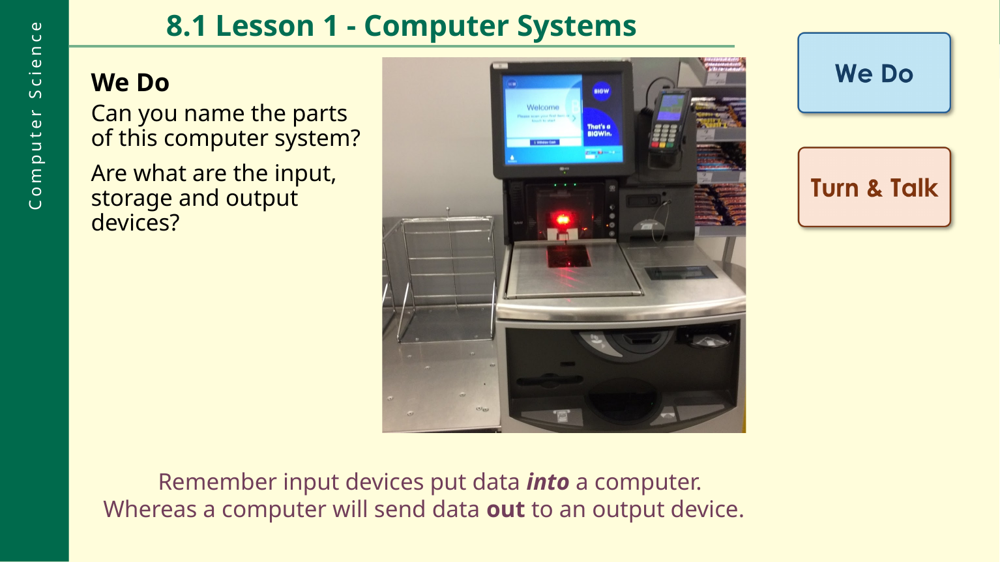

Year 8 Computing · L028.1 Lesson 1 · Computer Systems
Lesson progress · Step 1 of 8
Use these whenever they help.
Make the page easier to read
Choose what helps you.
Text size
Spacing
Page colour
Font
Step 1 of 8Do Now
Computer Systems
Classify input and output devices, understand what makes a computer system, and identify input, output and storage in larger systems.
Do NowI DoWe DoYou Do
Do NowQuiet WorkingMWBs
Review Now · 5 minutes
1. True or false: Binary is made up of two numbers, 0 and 1.
2. What does CPU stand for?
3. What should you do if something does not feel right online?
Teams from home has changed: the original lesson directs pupils to the school website → For Pupils / Useful Links and Downloads → Teams → log in with school email and password.
ObjectivesListeningCold Calling
Today we will
1 · Classify
Classify devices as either input or output.
2 · Explain
Explain the difference between an input/output device and a computer system.
3 · Identify
Identify inputs and outputs of large computer systems such as a self-checkout system.
Homework from the source lesson: Year 8 Homework 1 is shown as due Monday 28 September.
I DoListeningChoral Response
What does a computer system do?
Input
Inputs allow the user to put data into a computer.
Processing
The original PowerPoint lists processing as one of the four functions of a computer system.
Output
A computer will send data out to output devices.
Storage
Storage holds permanent data that will need to be used in the computer system.
Flashback: all computer systems do these four things. Some devices do all four functions. Other systems use peripherals.
I DoListeningCold Calling
Key terms retrieval
Input device
Puts data into a computer.
Output device
Receives data sent out from a computer.
Storage
Holds permanent data that will be needed later.
Computer system
The source lesson contrasts individual input/output devices with a system that performs the four functions.
We DoQuiet WorkingMWBs
Name the parts of a computer system
Use the original lesson image below. Identify one input device, one output device and one storage device.

Input device:
Output device:
Storage device:
You DoIndependent WorkingClass Notebook
Explain input and output
Independent Class Notebook task
Explain the difference between input and output devices using paragraphs.
Add examples
Add examples of each type within your sentences, or use bullet points / a table afterwards.
Presentation reminder from the PowerPoint: add the date to each row, use black font, mark in purple, make titles/headings bold or underlined, and use subheadings or write the question in your answer.
You DoQuiet WorkingDevice
Watch, notice, then label
As you watch the video, note down the input, output and storage devices you notice.
Inputs I noticed
Outputs I noticed
Storage I noticed
Task 3
Add a picture of a computer system and label it. Use red for inputs, blue for storage and green for outputs.
Challenge: try a more complex system such as an ECG machine in a hospital, the inside of a car, or the inside of a plane.
Exit QuestioningReflectionShow Your Hand
How secure is your understanding?
End-of-lesson reminder: use your Class Notebook evidence and presentation standards from the original lesson.